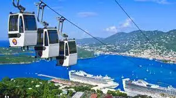

Travel to St. Thomas
ST. THOMAS WEATHER
Table of Contents
- Attractions
- Hotels
- Rental Cars
- Restaurants
- Shopping
Attractions
There are endless activites and excursions to do on St. Thomas. Many of them are on the water, but you can also do activities such as ziplining and horseback riding.
Explore the many beaches we have on island and enjoy soaking in the St. Thomas sun. Here are some of the most popular beaches in the table below
Popular beaches
Beach Name |
Details |
Image |
| Magens Bay Beach |
- $7 non-resident entrance fee required
- Concession stand and bar available
- Hiking Trails
- Watersports (Kayak and Paddleboard Rental)
|  |
| Lindquist Beach |
- $5 non-resident entry fee, car parking is an additional $2
- No Bathrooms
- Significantly quieter beach where you will find more locals
|
 |
| Coki Point Beach |
- No entry fee, $5 parking fee
- Prime location for snorkeling
- Shops and Vendors nearby
- Watersports (Kayaking, Paddleboarding, and Jet Skiing)
|
 |
These are just a 3 of the 40 beaches St. Thomas has.
For a complete St. Thomas Beach Guide click here: Beach Guide
Additional Activites
Other than visiting beaches there are many other activites and sites to explore, some of which are listed below
- Skyride to Paradise Point

- Coral World Ocean Park

- Tree Limin' Extreme Zipline

- Mountain Top: Enjoy the view overlooking Magens Bay and the beautiful St. Thomas skyline with an opportunity to buy souvenirs and taste the famous banana daiquiri

- VI Eco Tours: Booking available for day or night tours

- Kartion Racing: The ONLY off road Go Kart Park in the USVI

To book tours and activities click this link: St. Thomas Tours and Activities
Hotels
Flying in to St. Thomas? There are many places where you can book your stay. From recognized chain hotel brands to comfortable bed and breakfasts, there are many options available that can fit to your budget.
Available Hotels
Hotel |
Address/Location |
Book your Hotel |
Mariott
- Frenchman's Cove
- Westin Beach Resort & Spa
|
- 5 Estate Bakkeroe, St Thomas 00802
- 7338 Estate Bakkeroe St. Thomas US Virgin Islands 00802, 3011
|
- Frenchman's Cove
- Westin
|
| Sapphire Beach Resort and Marina |
SBRM COA 6720 Smith Bay Rd St Thomas 00802 |
Sapphire Resort
Note: Units are for rent on vacation rental sites such as Air bnb or VRBO |
| Emerald Beach Resort |
8070, Lindbergh Bay, St Thomas 00802 |
Emerald Beach
Note: The Resort with the closest access to the report |
| Windward Passage Hotel |
St Thomas, Veterans Dr, Charlotte Amalie, St Thomas 00804 |
Windward Passage
Note: Downtown St. Thomas City Hotel |
| Flamboyan on the Bay Resort |
6200 Magen's Bay Rd, St Thomas 00802 |
Flamboyan on the Bay |
| Bella Vista Scott Hotel |
9378 Estate Thomas, Charlotte Amalie, St Thomas 00802 |
Bella Vista Scott Hotel |
These are just a few of the many hotels that are available to book. If you are looking for additional options click here to explore more hotels: Book a Hotel!
Rental Cars
Need a car to travel around St. Thomas while you are staying? Don't worry there are plenty of car rental services available. Apart from the nationally recognized car rental services on St. Thomas such as Budget and Avis, there are also serveral local car rental companies that you can support.
Some of these include:
- Amalie Car Rentals: Their services offer direct pick up from the airport on the day of your arrival to immediately check you into your rental vehicle. On your departure they will meet you at the airport curb to take the car so there will be no shuttle necessary! Their average rates are $150 per day and $785 a week.
Click here to make a reservation and learn more: Amalie Car Rentals
- 360 Car Rentals: This rental service offers a complementary airport pickup and drop-off service. They guarantee a style and econoly vehicles that can easily satisfy you vacation needs. In addition to this they provide a list of toursit attractions and top spots to visit on St. Thomas. Prices vary
Click here to make a reservation and learn more: 360 Car Rental
- Little Rock Car Rental: Complementary airport pickup with a full service rental car. Prices start at $699 per week
Click here to make a reservation and learn more: Little Rock Car Rental
- Keep Left Rent-a-car:This companies service include the first contactless car renal on St. Thomas that are all locally owned and operated. They have vehicles available in all sizes starting at rates of $90 a day.
Clik here to make a reservation and learn more: Keep Left Rent a Car
- Paradise Car Rental:Free pick-up and drop-off services from the airport are offered by this car rental company. This rental company also has a wide range of cars available to fit your needs starting at rates of $140 a day.
Clik here to make a reservation and learn more: Paradise Car Rental
You can enjoy cruising around St. Thomas on your own using one of these car rental companies. There are also plenty others available if these do not fit your needs. Regardless of having a car you can enjoy your stay on St. Thomas. Remember to drive on the left!
Restaurants
On this little island there are many dining options, whether you are looking for food on the go or a nice restaurant to dine at. Caribbean, Italian, Chinese, Thai, Mexican, no matter what cuisine you're looking for we have it all!
Recommended Restaurants
| Restaurant |
Cuisine |
Location |
Menu |
| Gladys' Cafe |
|
5600 Royal Dane Mall, St. Thomas, Virgin Islands 00802 |
Gladys' Cafe Menu |
| Cravin' Crabs |
Seafood |
Long bay road Mandela circle, 00802 St. thomas |
Their menu changes regularly so visit their facebook page for the latest updates
Cravin' Crabs Facebook |
| Delly Deck |
American Diner(Known for breakfast/brunch) |
St. Thomas, Havensight Shopping Mall, Building 3, 00802 |
Delly Deck Menu |
| Great Wall Restaurant |
Chinese |
Havensight Shopping Mall, Building 3, St Thomas 00802 |
Great Wall Menu |
| Buddha Sushi |
Japanese |
114-3 Estate Frydenhoj, St Thomas 00802 |
Buddha Sushi Menu |
| Saki House/Thai Sushi |
|
St Thomas, Anna's Retreat, St Thomas 00802 (Red Hook) |
Saki House Menu |
| XO Bistro |
Italian |
6501 RED HOOK PLAZA #1, St Thomas 00802 |
XO Bistro Menu |
Staying at a hotel? Sailing in on a cruise? No matter which way you choose to travel, you will have the opportunity to experience St. Thomas's 3 main shopping locations. Enjoy shopping for luxury goods, jewelry, and souvenirs in the domestic U.S tax and duty free at all locations!
- Havensight Shopping Mall
Right next to the Cruise Ship Dock, this mall is a convenient place to shop jewelry, souvenirs or whatever you may be looking for tax free. There are also several restaurants to explore including Great Wall, Delly Deck, Smoking Rooster, and many more! Havensight Mall is also convenient as it connects to Yacht Haven Grande, a mall with fewer stores with a beautiful view of the water.
Click here to find more information: Havensight Shopping Mall

- Main Street
Considered downtown on the island, Main Street is known to be the central shopping center on St. Thomas. Enjoy walking down the rows on shops on both sides of the street. There are also several restaurants and bars around to grab a refreshing drink and snack as you walk through.
Click here to find more information: Downtown

- Crown Bay Marina
Located at the other cruise dock on the southwest side of the island this shopping center has many locally made crafts along with jewelry stores and restaurants serving local food for a taste of the Caribbean. At the marina there is also an opportunity to catch the a ferry to go to Water Island, which is a private island just 10 minutes away.
Click here to find more information: Crown Bay Marina

If there are any additional inquiries feel free to reach out: Send email